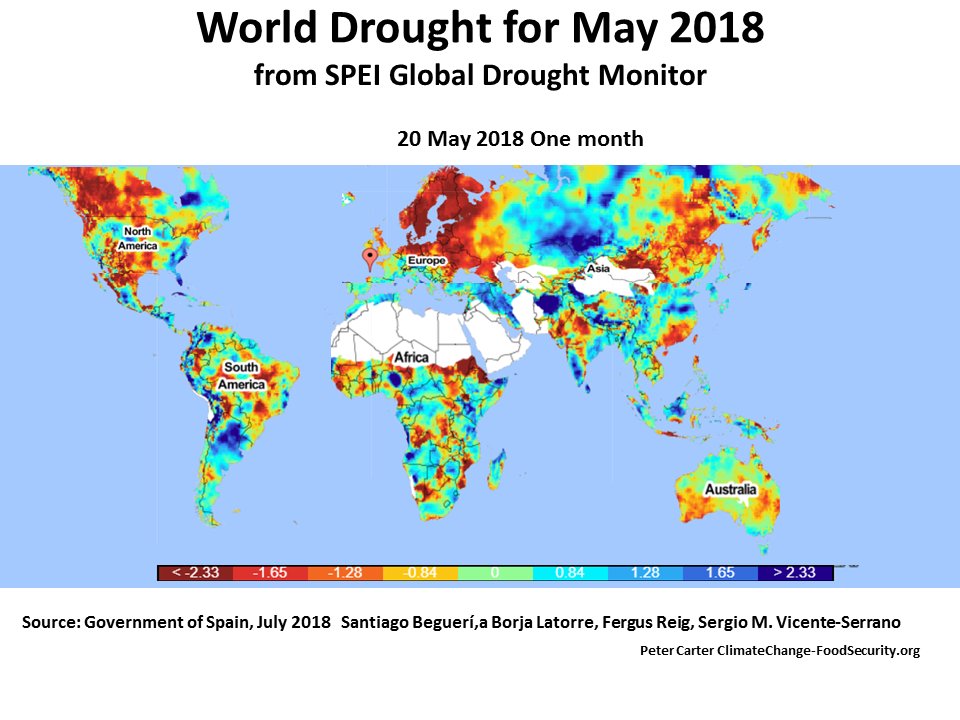

From the image below you can see the world map shaded in many different colors. Areas thats are closer to orange and red are areas that are in drought or drought can come in the near future. From this, we can see many areas of the world are in danger of drought.
